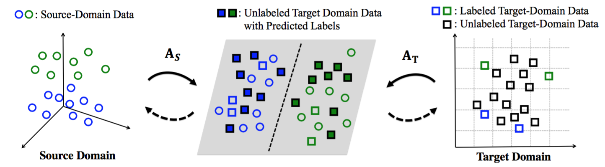
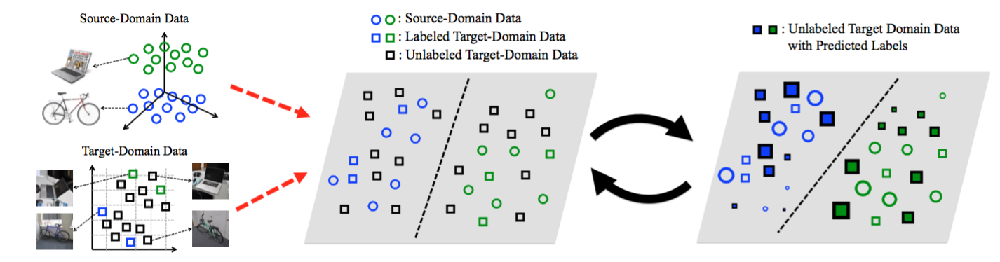
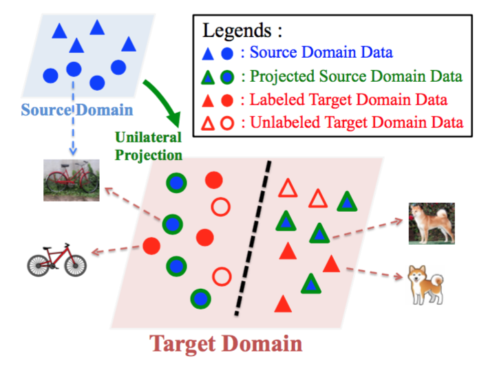
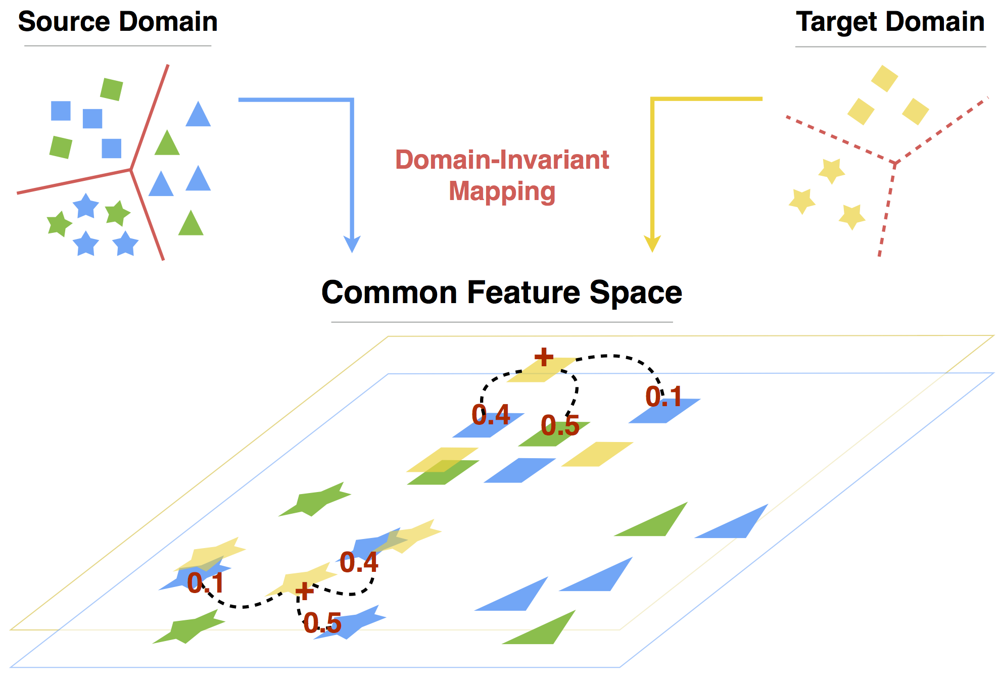
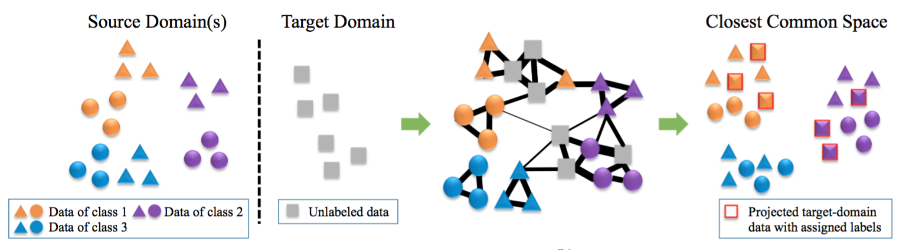
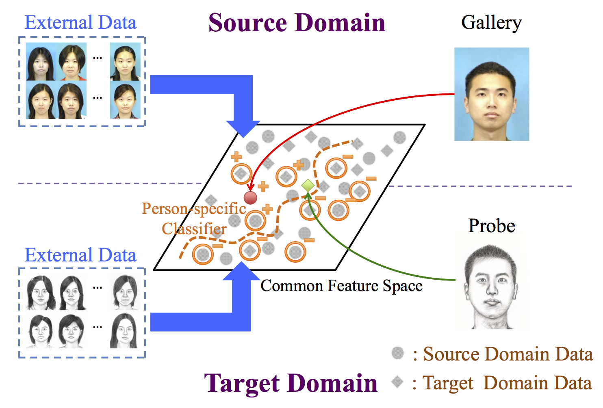
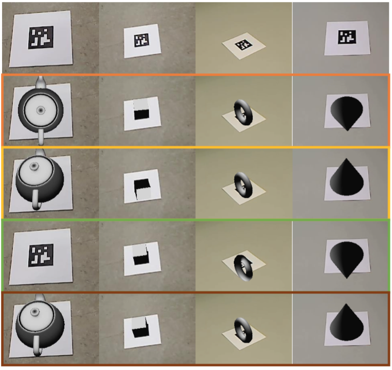
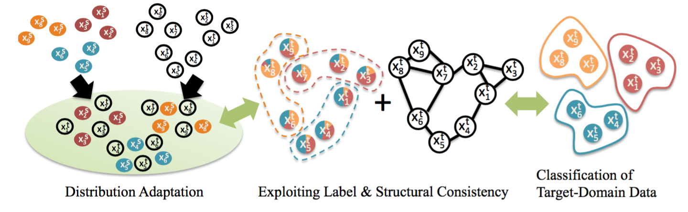

Yao-Hung (Hubert) Tsai |
Upcoming Ph.D. StudentMachine Learning DepartmentSchool of Computer ScienceCarnegie Mellon Universityyaohungt [at] andrew.cmu.edu |
|
I am an upcoming Ph.D. student in CMU MLD. My research interests lie in Deep Learning, Computer Vision, and Natural Language Processing.
Before coming to CMU, I had closely worked with Dr. Yu-Chiang Frank Wang and Dr. Shao-Yi Chien during my B.S. in Electrical Engineering from National Taiwan University. Here is my CV.
I'm engaged to Fans Fan. She is currently a Ph.D. student in National Taiwan University. |
|  |
Transfer Neural Trees for Heterogeneous Domain Adaptation European Conference on Computer Vision (ECCV) 2016 |
|  |
Learning Cross-Domain Landmarks for Heterogeneous Domain Adaptation Computer Vision and Pattern Recognition (CVPR) 2016 |
|
Generalized Joint Distribution Adaptation on Heterogeneous Feature Space International Conference on Multimedia & Expo (ICME) 2016 (oral) |
|  |
Heterogeneous Domain Adaptation with Label and Structure Consistency International Conference on Acoustics, Speech and Signal Processing (ICASSP) 2016 |
|  |
Domain-Constraint Transfer Coding for Imbalanced Unsupervised Domain Adaptation Association for the Advancement of Artificial Intelligence (AAAI) 2016 |
|  |
Unsupervised Domain Adaptation with Imbalanced Cross-Domain Data International Conference on Computer Vision (ICCV) 2015 |
|  |
Person-specific Domain Adaptation with Applications to Heterogeneous Face Recognition International Conference on Image Processing (ICIP) 2014 |
|  |
Stable Pose Tracking from a Planar Target with an Analytical Motion Model in Real-time Applications International Workshop on Multimedia Signal Processing (MMSP) 2014 |
|  |
Unsupervised Domain Adaptation with
Label and Structural Consistency Transactions on Image Processing (TIP) 2015 (under minor revision) |